Annual Report of the Board of Directors on the Affairs of the Company
The Directors are pleased to present their report and the audited financial statements of the Company, and its subsidiary Companies for the year ended 31 December 2011.
1. Formation
Sri Lanka Telecom (SLT) was formed by an Incorporation Order made under Section 2 of the State Industrial Corporations Act No. 49 of 1957 and published in the Extraordinary Gazette No. 596/11 of 6 February 1990. Subsequently, in terms of an order made by the Minister of Posts and Telecommunications ["the Minister"] on 24 July 1991 under Section 23 of the Sri Lanka Telecommunications Act No. 25 of 1991 and published in the Gazette No. 675 of 9 August 1991, all properties, rights and liabilities (other than those excluded by the agreement entered into between the Minister and SLT as per sub-section 2 of Section 23 of the Sri Lanka Telecommunication Act) to which the Department of Telecommunications (DOT) was entitled or subject to immediately before the transfer date of 1 September 1991 were vested with SLT.
On 25 September 1996, SLT was converted to a public limited company under the Conversion of Public Corporations of Government Owned Business Undertakings into Public Limited Companies Act No. 23 of 1987, vide Extraordinary Gazette No. 942/7 dated 25 September 1996.
On 5 August 1997, the Government of Sri Lanka as the sole shareholder of SLT divested 35% [631,701,000 ordinary shares] of the issued ordinary share capital to Nippon Telegraph and Telephone Corporation (NTT) and entered into an agreement to transfer the management of SLT to NTT. On 2 July 1998, the Government of Sri Lanka divested a further 3.5% of the issued ordinary share capital by transfer of 63,170,010 ordinary shares to the employees of SLT. On 22 March 2000, NTT transferred the entire 35% of their holding in SLT to NTT Communications Corporation (NTT Com).
The Government of Sri Lanka divested a further 12% of its holding to the public through a listing on the Colombo Stock Exchange in November 2002, reducing its holding to 49.5%.
On 4 June 2007, SLT was re-registered under the Companies Act No. 07 of 2007 as Sri Lanka Telecom PLC [SLT PLC].
On 1 April 2008, NTT Com of Japan who held 635,076,318 ordinary shares, which constituted 35.2% of the total issued stated capital of SLT PLC, sold their entire holding to Global Telecommunications Holdings N.V. of Netherlands (GTH) at a price of Rs 50.50 per share. Following the share trade by NTT Com, GTH, in terms of the Takeovers and Mergers Code, announced a mandatory offer to the remaining shareholders which was closed on 2 June 2008. At the close of the mandatory offer, GTH had acquired additional 9.78% of the stated capital of SLT PLC, making the total shareholding to 44.98% of the total issued stated capital of SLT PLC. Since the expiration of the management agreement with NTT, no management agreement had been entered into by SLT PLC.
2. Principal Group Activities and Review of the Business
The Group provides a broad portfolio of telecommunication services across Sri Lanka, the main activity being domestic and international fixed and mobile telephone services. In addition, the range of services provided by the Group include, inter-alia, internet services, IPTV, Wimax operations, data services, domestic and international leased circuits, frame relay, satellite uplink and maritime transmission.
The Company's interest in subsidiaries and the business activities of respective subsidiaries are as follows:
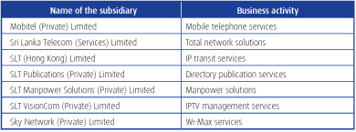
A detailed review of the Company's activities, the development of its businesses, and an indication of likely future developments are given under Management Discussion and Analysis.
3. Board of Directors
The Directors of Sri Lanka Telecom PLC as at the date of this report are as follows;
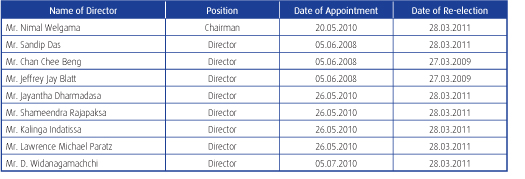
Messrs Chan Chee Beng, Jeffrey Jay Blatt and Jayantha Dharmadasa will stand for re- election, at the forthcoming AGM in accordance with the Company's Articles of Association.
4. Directors' Interest in Contracts with the Company
The particulars of entries made in the Interests Register pertaining to General Disclosures made by the Directors of the Company in terms of the Companies Act No. 7 of 2007 during the financial year under review, are given below:
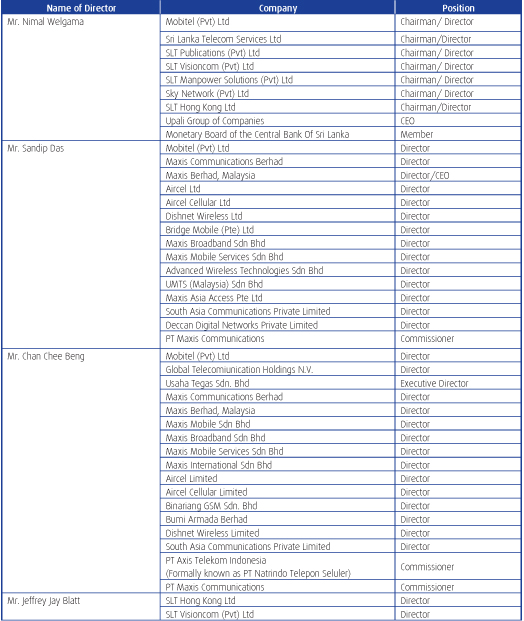
5. Remuneration and other benefits of directors
The remuneration and other benefits of the Directors are given in Note 6 to the consolidated financial statements on page 121.
6. Directors' interests in shares of the Company
As at 31 December 2011, none of the Directors held shares in the Company or its subsidiaries.
7. Share capital
As per the share register, the following shareholders held more than 5% of the 1,804,860,000 ordinary shares in issue as at 31 December 2011.
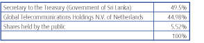
8. Corporate governance statement
Corporate Governance practices prevalent within the organization are described in the Corporate Governance Report on pages 56 to 60.
The Directors confirmed that the Company has complied with the Corporate Governance Rules contained in the Listing Rules of Colombo Stock Exchange.
9. Financial statements
The financial statements which include the income statements, balance sheets, statements of changes in equity and the notes to the financial statements of the Group and the Company for the year ended 31 December 2011 are set out on pages 104 to 154. All amounts are stated in Sri Lanka Rupees million, unless otherwise stated.
10. Financial Results Income
The total income for 2010 and 2011 were as follows;
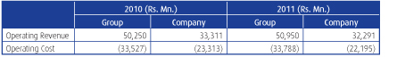
Details are given in the Income Statement of the Financial Statements.
11. Profit
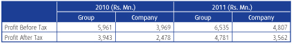
12. Dividends
On recommendation of the Board of Directors, the Company distributed a first and final dividend of sixty cents (60 cents) per share amounting to Rs.1,082,916,000 Mn for the year ended 31 December 2010 before providing for the 10% Withholding Tax.
The entire cost of the first and final dividend was funded by the profits of the Company for 2010 and hence there was no capitalisation of reserves.
As required by section 56(2) of the Companies Act No. 07 of 2007, the Board of Directors has confirmed that the Company has satisfied the Solvency Test in accordance with section 57 of the Companies Act No. 07 of 2007 and obtained a certificate from the external auditors for the same.
The Directors recommend that a first & final dividend of Rs. 0.85 per existing share, amounting to Rs. 1,534,131,000 before providing for the 10% Withholding Tax subject to approval at the forthcoming AGM. The final dividend will be payable on 10th April 2012 to shareholders on the register at the close of business on 29th March 2012.
13. Reserves
Total Reserves of the Company stood at Rs. 53,160 Mn as at 31.12.2011, details of which are given in the Statement of Changes in Equity on page 106 of the Annual Report.
14. Respective Responsibilities of Directors and Auditors for the Financial Statements
The Directors are responsible for the preparation of the Financial Statements so that they present a true and fair view of the state of affairs of the Company. The Directors are of the view that these Financial Statements have been prepared in conformity with the requirements of the Companies Act No.7 of 2007, the Sri Lanka Accounting and Auditing Standards Act No.15 of 1995 and the Continuing Listing Rules of the Colombo Stock Exchange.
15. Independent auditors' report
The independent auditors' report is set out on page 103.
16. Changes in accounting policies
The accounting policies adopted by the Company and its subsidiaries have been consistently applied from previous years.
17. Property, plant and equipment
The movements in property, plant and equipment during the year are set out in Note 14 to the consolidated financial statements. Current status of value of properties is disclosed in page no 157.
18. Amounts payable to the firm holding office as an Auditor
The remuneration payable by the Company to the Independent Auditors is given in Note 6 to the consolidated financial statements on page 121.
19. Auditors' relationship or any interest with the Company
The Directors are satisfied that, based on written representations made by the Independent Auditors to the Board, they did not have any relationship or any interest with the Company and its subsidiaries that would impair their independence.
20. Statutory payments
All statutory payments due to the Government of Sri Lanka and on behalf of employees have been made or accrued for, at the balance sheet date.
21. Environmental protection
After making adequate enquiries from management, the Directors are satisfied that the Company and its subsidiaries operate in a manner that minimises the detrimental effects on the environment and provides products and services that have a beneficial effect on the customers and the communities within which the Group operates.
22. Donations
During the year the Directors had approved donations amounting to Rs. 766,500 for charitable purposes (2010 - Rs. 751,592). The amount includes contributions on account of Corporate Social Responsibility (CSR) initiatives as well.
23. Employment policies
Sri Lanka Telecom has a range of employment policies covering such issues as diversity, employee well-being and equal opportunities. The Company takes its responsibilities to the disabled seriously and seeks not to discriminate against current or prospective employees because of any disability. Employees who become disabled during their career at SLT will be retained in employment wherever possible and given help with rehabilitation and training
24. Sustainability Reporting
The Group is conscious of the impact, direct and indirect, on the environment due to its business activities. Every endeavour is made to minimise the adverse effects on the environment to ensure sustainable continuity of our natural resources. The activities undertaken by the Group in recognition of its responsibility as a corporate citizen are disclosed more fully on pages 66 to 89 of this Report.
25. Post balance sheet events
No events had occurred since the balance sheet date and the approval of these consolidated financial statements, which would require adjustments to, or disclosure in, these consolidated financial statements except the disclosure in Note 37.
26. Appointment of auditors
KPMG Ford Rhodes, Thornton & Co, has expressed their willingness to continue in office as auditor of the Company and a resolution proposing their re-appointment will be put to shareholders at the AGM.
After proper consideration, the Audit Committee is satisfied that the Company's auditor, KPMG Ford Rhodes, continues to be objective and independent of the Company. In coming to this conclusion the Audit Committee gave full consideration to the non-audit work carried out by KPMG Ford Rhodes, Thornton & Co,.
27. Risks and uncertainties
Appended to this Annual Report is the Board's analysis of what it believes to be the main risks and uncertainties facing the Company. Full details can be seen on pages 61 to 63.
28. Going concern
The directors have a reasonable expectation that the Group has adequate resources to continue operating for the foreseeable future. For this reason, the going concern basis continues to be adopted in preparing the accounts.
29. Annual General Meeting
The AGM will be held at 10.00 am on 29th March 2012 at Kings' Court, Cinnamon Lakeside, Colombo. The Notice of Meeting is enclosed with this report and is accompanied by a letter from the Chairman.
By order of the Board
PW Corporate Secretarial (Pvt) Ltd
Secretaries
17 February 2012
Registered in Sri Lanka: No.PQ 7
Notes to the Consolidated Financial Statements
1 REPORTING ENTITY Sri Lanka Telecom PLC (the "Company") is a company domiciled in Sri Lanka. The address of the Company's registered office is Lotus Road, Colombo 1. The consolidated financial statements of the Company as at and for the year ended 31 December 2011 comprise the Company and its subsidiaries (together referred to as the "Group" and individually as "Group entities"). The Group primarily is involved in providing broad portfolio of telecommunication services across Sri Lanka, In addition, the range of services provided by the Group include, inter-alia, internet services, data services, domestic and international leased circuits, broadband, satellite uplink, maritime transmission, IPTV service, directory publishing and Wi-max service .The Company is a quoted public Company which has its listing on the Colombo Stock Exchange.
2 BASIS OF PREPARATION
(a) Statement of compliance "The consolidated financial statements have been prepared in accordance with Sri Lanka Accounting Standards (SLAS) as laid down by the Institute of Chartered Accountants of Sri Lanka(ICASL) and the requirements of the Companies Act No. 07 of 2007.
The consolidated financial statements were authorised for issue by the Board of Directors on 17 February 2012.
(b) Basis of measurement "The consolidated financial statements have been prepared on the historical cost basis except foreign operations which are accounted as explained in Notes 3(b) to the Financial Statements.
The financial statements have been prepared on a going concern basis.
(c) Functional and presentation currency "These financial statements are presented in Sri Lankan Rupees, which is the Company's functional currency, and the Group's presentation currency. All financial information presented in Sri Lankan rupees has been rounded to the nearest million.
(d) Use of estimates and judgements The preparation of financial statements in conformity with SLASs requires management to make judgements, estimates and assumptions that affect the application of accounting policies and the reported amounts of assets, liabilities, income and expenses. Actual results may differ from these estimates.
Estimates and underlying assumptions are reviewed on an ongoing basis. Revisions to accounting estimates are recognised in the period in which the estimates are revised and in any future periods affected.
Information about significant areas of estimation uncertainty and critical judgements in applying accounting policies that have the most significant effect on the amounts recognised in the consolidated financial statements is included in notes;
- Note 15 - Intangible Assets
- Note 24 - Deferred Tax
- Note 27 - Employee Benefits
- Note 33 - Provisions & Contingencies
- Note 25 - Deferred Income
(e) Changes in Accounting policies No changes in accounting policies have taken place during the year 2011.
3 CONSISTENCY IN ACCOUNTING POLICIES The accounting policies set out below have been applied consistently to all periods presented in these consolidated financial statements, and have been applied consistently by Group entities. Certain comparative amounts have been reclassified to confirm with the current year's presentation.
(a) Basis of consolidation
(i) Subsidiaries Subsidiaries are entities controlled by the Group. Control exists when the Group has the power to govern the financial and operating policies of an entity so as to obtain benefits from its activities. In assessing control, potential voting rights that currently are exercisable are taken into account. The financial statements of subsidiaries are included in the consolidated financial statements from the date that control commences until the date that control ceases. The accounting policies of subsidiaries have been changed when necessary to align them with the policies adopted by the Group.
The purchase method of accounting is used to account for the acquisition of subsidiaries by the Group. The cost of an acquisition is measured as the fair value of the assets given, equity instruments issued and liabilities incurred or assumed at the date of exchange, plus costs directly attributable to the acquisition. Identifiable tangible and intangible assets acquired and liabilities and contingent liabilities assumed in a business combination are measured initially at their fair values at the acquisition date, irrespective of the extent of any minority interest. The excess of the cost of acquisition over the fair value of the Group's share of the identifiable net assets acquired is recorded as goodwill. If the cost of acquisition is less than the fair value of the net assets of the subsidiary acquired, the difference is recognised directly in the income statement.
(ii) Transactions eliminated on consolidation Intra-group balances and transactions, and any unrealised income and expenses arising from intra-group transactions, are eliminated in preparing the consolidated financial statements. Unrealised gains arising from transactions with equity accounted investees are eliminated against the investment to the extent of the Group's interest in the investee. Unrealised losses are eliminated in the same way as unrealised gains, but only to the extent that there is no evidence of impairment.
(b) Foreign currency
(i) Foreign currency transactions Transactions in foreign currencies are translated to the respective functional currencies of Group entities at average of buying and selling exchange rates at the dates of the transactions. Monetary assets and liabilities denominated in foreign currencies at the reporting date are retranslated to the functional currency at the exchange rate at that date.
Foreign exchange differences arising on the settlement or reporting of the Company's monetary items at rates different from those which were initially recorded are dealt in the Income Statement. Unrealised gains and losses are dealt with through the Income Statement.
(ii) Foreign operations
The assets and liabilities of foreign operations, including goodwill and fair value adjustments arising on acquisition, are translated to rupees at exchange rates at the reporting date. The income and expenses of foreign operations, excluding foreign operations in hyperinflationary economies, are translated to rupees at average exchange rates.
Foreign exchange gains and losses arising from a monetary item receivable from or payable to a foreign operation, the settlement of which is neither planned nor likely in the foreseeable future, are considered to form part of a net investment in a foreign operation and are recognised directly in equity in the exchange equalisation reserve.
(c) Property, plant and equipment
(i) Recognition and measurement Items of property, plant and equipment are measured at cost less accumulated depreciation and accumulated impairment losses. As disclosed in Note 14 where property, plant and equipment of the Department of Telecommunications were transferred to Sri Lanka Telecom at a valuation performed by the Government of Sri Lanka and was used as the opening cost of fixed assets.
Cost includes expenditure that is directly attributable to the acquisition of the asset. The cost of self-constructed assets includes the cost of materials and direct labour, any other costs directly attributable to bringing the assets to a working condition for their intended use, and the costs of dismantling and removing the items and restoring the site on which they are located. Purchased software that is integral to the functionality of the related equipment is capitalised as part of that equipment.
When parts of an item of property, plant and equipment have different useful lives, they are accounted for as separate items (major components) of property, plant and equipment
(ii) Subsequent costs The cost of replacing part of an item of property, plant and equipment is recognised in the carrying amount of the item if it is probable that the future economic benefits embodied within the part will flow to the Group and its cost can be measured reliably. The carrying amount of the replaced part is derecognised. The costs of the day-to-day servicing of property, plant and equipment are recognised in profit or loss as incurred.
(iii) Depreciation Depreciation is recognised in profit or loss on a straight-line basis over the estimated useful lives of each part of an item of property, plant and equipment. In the year of acquisition depreciation is computed on proportionate basis from the month the asset is put in to use and no depreciation will be charged to the month in which the particular asset was disposed. Leased assets are depreciated over the shorter of the lease term and their useful lives unless it is reasonably certain that the Group will obtain ownership by the end of the lease term. Land is not depreciated.
The estimated useful lives for the assets are as follows:
| Freehold Buildings |
40 years |
| Ducts ,cables and other outside plant |
8 – 12.5 years |
| Submarine cables |
10 years
|
| Telephone exchanges and transmission equipment |
8 – 12.5 years |
| Motor Vehicles |
5 years |
| Other Fixed Assets |
4- 10 years |
| CDMA Handsets |
3 years |
| PABX System |
2-6 years |
(iv) Capital Work-in-Progress Capital work-in-progress is stated at cost. These are expenses of a capital nature directly incurred in the construction of buildings, major plant and machinery and system development, awaiting capitalization.
(v) Derecognition The carrying amount of an item of Property, Plant & Equipment is derecognized on disposal or when no future economic benefits are expected from its use or disposal . Gains and losses on disposal of an item of property, plant and equipment are determined by comparing the proceeds from disposal with the carrying amount of property, plant and equipment, and are recognised net within "other income" in profit or loss.
When replacement costs are recognized in the carrying amount of an item of Property, Plant and Equipment, the remaining carrying amount of the replaced part is derecognized. Major inspection costs are capitalized. At each such capitalization, the remaining carrying amount of the previous cost of inspections is derecognized.
(d) Intangible assets
(i) Goodwill Goodwill arises on the acquisition of subsidiaries.
Goodwill arising on the acquisition of a subsidiary represents the excess of the cost of the investment over the carrying amount of the interest in the net assets acquired at the date of exchange.
Subsequent measurement
Goodwill is measured at cost less accumulated impairment losses.
(ii) Other intangible assets Other intangible assets that are acquired by the Group, which have finite useful lives, are measured at cost less accumulated amortisation and accumulated impairment losses.
(iii) Licenses
Separately acquired licences are shown at historical cost. Expenditures on license fees that is deemed to benefit or relate to more than one financial year is classified as license fee and is being amortized over the License period on a straight line basis.
(iv) Subsequent expenditure
Subsequent expenditure is capitalised only when it increases the future economic benefits embodied in the specific asset to which it relates. All other expenditure, including expenditure on internally generated goodwill is recognised in profit or loss as incurred.
(v) Amortisation Amortisation is recognised in profit or loss on a straight-line basis over the estimated useful lives of intangible assets, other than goodwill, from the date that they are available for use. The estimated useful lives for the current and comparative periods are as follows:
Software 3- 5 years
(e) Leased assets
Leases in terms of which the Group assumes substantially all the risks and rewards of ownership are classified as finance leases. Upon initial recognition the leased asset is measured at an amount equal to the lower of its fair value and the present value of the minimum lease payments. Subsequent to initial recognition, the asset is accounted for in accordance with the accounting policy applicable to that asset. For operating leases, the leased assets are not recognised on the Group's balance sheet.
(f) Inventories Inventories are measured at the lower of cost and net realisable value. The cost of inventories is based on the weighted average cost principle, and includes expenditure incurred in acquiring the inventories , conversion costs and other costs incurred in bringing them to their existing location and condition.Mobitel computes cost of inventories on FIFO basis.
(g) Impairment Non-financial assets
The carrying amounts of the Group's non-financial assets, are reviewed at each reporting date to determine whether there is any indication of impairment. If any such indication exists, then the asset's recoverable amount is estimated. For goodwill and intangible assets that have indefinite lives or that are not yet available for use, the recoverable amount is estimated each year at the same time.
The recoverable amount of an asset or cash-generating unit is the greater of its value in use and its fair value less costs to sell. In assessing value in use, the estimated future cash flows are discounted to their present value using a pre-tax discount rate that reflects current market assessments of the time value of money and the risks specific to the asset. For the purpose of impairment testing, assets are grouped together into the smallest group of assets that generates cash inflows from continuing use that are largely independent of the cash inflows of other assets or groups of assets (the "cash-generating unit"). The goodwill acquired in a business combination, for the purpose of impairment testing, is allocated to cash-generating units that are expected to benefit from the synergies of the combination.
An impairment loss is recognised if the carrying amount of an asset or its cash-generating unit exceeds its estimated recoverable amount. Impairment losses are recognised in profit or loss. Impairment losses recognised in respect of cash-generating units are allocated first to reduce the carrying amount of any goodwill allocated to the units and then to reduce the carrying amounts of the other assets in the unit (group of units) on a pro rata basis.
An impairment loss in respect of goodwill is not reversed. In respect of other assets, impairment losses recognised in prior periods are assessed at each reporting date for any indications that the loss has decreased or no longer exists. An impairment loss is reversed if there has been a change in the estimates used to determine the recoverable amount. An impairment loss is reversed only to the extent that the asset's carrying amount does not exceed the carrying amount that would have been determined, net of depreciation or amortisation, if no impairment loss had been recognised.
(h) Government Grants Other government grants are recognised initially at fair value when there is reasonable assurance that they will be received and the Group will comply with the conditions associated with the grant. Grants that compensate the Group for expenses incurred are recognised in profit or loss as other income on a systematic basis in the same periods in which the expenses are recognised. Grants that compensate the Group for the cost of an asset are recognised in profit or loss on a systematic basis over the useful life of the asset.
(i) Investments The long term investments are initially recognised at cost and provision is only made where, in the opinion of the Directors, there is a permanent diminution in value. Where there has been a permanent diminution in the value of an investment, it is recognised as an expense in the period in which the diminution is identified. On disposal of an investment, the difference between the net disposal proceeds and the carrying amount is charged or credited to the income statement.
(j) Trade receivables Trade receivables are carried at anticipated realizable value. An estimate is made for doubtful receivables based on review of all outstanding amounts at the year end. Bad debts are written off during the year in which they are identified.
(k) Cash and cash equivalents Cash and cash equivalents comprise cash balances and deposits with original maturities of three months or less. The cash flow has been prepared using the indirect method in accordance with the Sri Lanka Accounting Standard 9 - 'Cash Flow Statements'.
(l) Stated capital Ordinary shares
Ordinary shares are classified as equity.
(m) Borrowings Borrowings include bank borrowings. They are accounted at the gross value of the outstanding balance.
(n) Employee benefits
(1) Defined contribution plans A defined contribution plan is a post-employment benefit plan under which contributions are made into a separate fund and the entity will have no legal or constructive obligation to pay further amounts. Obligations for contributions to defined contribution plan are recognised as an employee benefit expense in profit or loss in the periods during services is rendered by employees. Prepaid contributions are recognised as an asset to the extent that a cash refund or a reduction in future payments is available.
(1.1) Employee Provident Fund All employees of the Company are members of the Sri Lanka Telecom Provident Fund to which the Company contributes 15% of such employees' basic salary and allowances. All employees of subsidiaries of the Group except for Sri Lanka Telecom (Hong Kong) Limited and SLT Services (Private) Ltd are members of Employees' Provident Fund (EPF), to which respective subsidiaries contribute 12% of such employees' basic salary and allowances. Employees of SLT Services (Private) Ltd are members of Employees' Provident Fund (EPF), where the company contribute 15% of such employees' basic salary and allowances.
(1.2) Employee Trust Fund The Company and other subsidiaries contribute 3% of the salary of each employee to the Employees' Trust Fund.
(2) Defined benefit plans A defined benefit plan is a post-employment benefit plan other than a defined contribution plan. The Group's net obligation in respect of defined benefit plans is calculated separately for each plan by estimating the amount of future benefit that employees have earned in return for their service in the current and prior periods; that benefit is discounted to determine its present value. The valuation is performed annually by a qualified actuary using the projected unit credit method. When the valuation results in a benefit to the Group, the recognised asset is limited to the total of any unrecognised past service costs and the present value of economic benefits available in the form of any future refunds from the plan or reductions in future contributions to the plan. An economic benefit is available to the Group if it is realisable during the life of the plan, or on settlement of the plan liabilities.
When the benefits of a plan are improved, the portion of the increased benefit relating to past service by employees is recognised in profit or loss on a straight-line basis over the average period until the benefits become vested. To the extent that the benefits vest immediately, the expense is recognised immediately in profit or loss. The group recognises all actuarial gains and losses arising from defined benefit plans directly in the income statement.
(3) Termination benefits Termination benefits are recognised as an expense when the Group is demonstrably committed, without realistic possibility of withdrawal, to a formal detailed plan to either terminate employment before the normal retirement date, or to provide termination benefits as a result of an offer made to encourage voluntary redundancy. Termination benefits for voluntary redundancies are recognised as an expense if the Group has made an offer of voluntary redundancy, it is probable that the offer will be accepted, and the number of acceptances can be estimated reliably.
(4) Short-term benefits Short-term employee benefit obligations are measured on an undiscounted basis and are expensed as the related service is provided.
A liability is recognised for the amount expected to be paid under short-term cash bonus or leave encashment plans if the Group has a present legal or constructive obligation to pay this amount as a result of past service provided by the employee and the obligation can be estimated reliably.
(o) Provisions A provision is recognised if, as a result of a past event, the Group has a present legal or constructive obligation that can be estimated reliably, and it is probable that an outflow of economic benefits will be required to settle the obligation.
(p) Revenue Revenue from services rendered in the course of ordinary activities is measured at fair value of the consideration received or receivable net of trade discounts ,volume rebates and after eliminating the sales within the Group.
Revenue is recognized when persuasive evidence exist , usually in the form of an executed sales agreement, that the significant risks and rewards of ownership have been transferred to the customer, recovery of the consideration is probable , there is no continuing management involvement with the services rendered, and the amount of revenue can be measured reliably.
If it is probable that discounts will be granted and the amount can be measured reliably, then the discount is recognized as a reduction of revenue as the sales are recognized.
The revenue is recognised as follows:
(i) Domestic and international call revenue, rental income Revenue for call time usage by customers is recognised as revenue as services are performed, with unbilled revenue resulting from services already provided accrued at the end of each period.
Fixed rental is recognised as income on a monthly basis in relation to the period of services rendered.
(ii) Revenue from other network operators and international settlements The revenue received from other network operators, local and international, for the use of the Group's telecommunication network are recognised, net of taxes, based on usage taking the traffic minutes/per second rates stipulated in the relevant agreements and regulations and based on the terms of the lease agreements for fixed rentals.
Revenue arising from the interconnection of voice and data traffic between other telecommunications operators is recognised at the time of transit across the group's network and presented on gross basis. The relevant revenue accrued is recognised under income in the income statement and interconnection expenses recognised under operating costs in the income statement.
(iii) Revenue from broadband Revenue from Data services and IPTV services is recognized on usage and the fixed rental on a monthly basis when it is earned net of taxes, rebates and discounts.
(iv) Revenue from other telephony services The revenue from other telephony services are recognised on an accrual basis based on fixed rental contracts entered between the Group and subscribers.
(v) Connection fees The connection fees relating to Public Switched Telephone Network (PSTN) are deferred over a period of 15 years. Revenue is recognized on an annual basis irrespective of the date of connection.
The connection fees relating to Code Divisional Multiple Access (CDMA) connections are recognised as revenue in the period in which the connection is activated.
(vi) Service Agreements revenue Capacity contracts which do not convey the right to use a specified capacity in an identified fiber cable are accounted as service arrangements. Revenues from capacity contracts under service arrangements are recognized on a straight line basis over the period of the contracts. Amounts received in advance for any services are recorded as deferred revenue. In the event that a customer terminates an IRU prior to the expiry date of the contract and releases the Company from the obligation to provide future services, the remaining unamortized deferred revenue is recognized in the period the contract is terminated.
(vii) Prepaid Card revenue Revenue from the sale of prepaid card on CDMA, Internet is deferred until such time as the customer uses the call time, downloadable quota or the credit expires.
(viii) Equipment Sales Revenue from sale of equipment is recognised, net of taxes, on completion of the transaction.
(ix) Sales of services Revenue from fixed - price contracts for providing manpower is generally recognised in the period of the services are provided. Revenue from fixed-price contracts for delivering network project services is recognized under the percentage-of-completion (POC) method. Under the POC method, revenue is generally recognized based on the services performed to date as a percentage of the total services to be performed.
Revenue from publication sales relating to advertising revenue is recognised on publishing the advertisement in the telephone directory and a copy delivered to the subscriber on percentage of completion method.
(q) Expenditure
The expenses are recognised on an accrual basis. All expenses incurred in the ordinary course of business and in maintaining property, plant and equipment in a state of efficiency is charged against income in arriving at the profit for the year.
(r) Lease payments
Payments made under operating leases are recognised in profit or loss on a straight-line basis over the term of the lease. Lease incentives received are recognised as an integral part of the total lease expense, over the term of the lease.
Minimum lease payments made under finance leases are apportioned between the finance expense and the reduction of the outstanding liability. The finance expense is allocated to each period during the lease term so as to produce a constant periodic rate of interest on the remaining balance of the liability.
Contingent lease payments are accounted for by revising the minimum lease payments over the remaining term of the lease when the lease adjustment is confirmed.
(s) Finance income and expenses
Finance income comprises interest income on funds invested, dividend income, gains on the disposal of fixed assets and gains on hedging instruments that are recognised in profit or loss. Interest income is recognised as it accrues in profit or loss. Dividend income is recognised in profit or loss on the date that the Group's right to receive payment is established, which in the case of quoted securities is the ex-dividend date.
Finance expenses comprise interest expense on borrowings, unwinding of the discount on provisions, dividends on preference shares classified as liabilities, and losses on hedging instruments that are recognised in profit or loss.
Foreign currency gains and losses are reported on a net basis.
(t) Income tax Income tax expense comprises current and deferred tax. Income tax expense is recognised in profit or loss except to the extent that it relates to items recognised directly in equity, in which case it is recognised in equity.
(i) Current Taxation Current tax is the expected tax payable on the taxable income for the year, using tax rates enacted or substantively enacted at the reporting date, and any adjustment to tax payable in respect of previous years.
(ii) Deferred Taxation Deferred tax is recognised using the balance sheet method, providing for temporary differences between the carrying amounts of assets and liabilities for financial reporting purposes and the amounts used for taxation purposes. Deferred tax is not recognised for the following temporary differences: the initial recognition of assets or liabilities in a transaction that is not a business combination and that affects neither accounting nor taxable profit or loss, and differences relating to investments in subsidiaries to the extent that it is probable that they will not reverse in the foreseeable future. In addition, deferred tax is not recognised for taxable temporary differences arising on the initial recognition of goodwill. Deferred tax is measured at the tax rates that are expected to be applied to temporary differences when they reverse, based on the laws that have been enacted or substantively enacted by the reporting date. Deferred tax assets and liabilities are offset if there is a legally enforceable right to offset current tax liabilities and assets, and they relate to income taxes levied by the same tax authority on the same taxable entity, or on different tax entities, but they intend to settle current tax liabilities and assets on a net basis or their tax assets and liabilities will be realised simultaneously.
A deferred tax asset is recognised to the extent that it is probable that future taxable profits will be available against which the temporary difference can be utilised. Deferred tax assets are reviewed at each reporting date and are reduced to the extent that it is no longer probable that the related tax benefit will be realised.
(iii) Economic Service Charge (ESC) ESC is payable on the liable turnover at specified rates. As per the provision of the Economic Service Charge Act No. 13 of 2006 and subsequent amendments thereto, ESC is deductible from the income tax liability. Any unclaimed payment can be carried forward and set off against the income tax payable as per the relevant provision in the Act.
(u) Earnings per share The Group presents basic and diluted earnings per share (EPS) data for its ordinary shares. Basic EPS is calculated by dividing the profit or loss attributable to ordinary shareholders of the Company by the weighted average number of ordinary shares outstanding during the period. Diluted EPS is determined by adjusting the profit or loss attributable to ordinary shareholders and the weighted average number of ordinary shares outstanding for the effects of all dilutive potential ordinary shares.
(v) Insurance reserve The Company transfers annually from the retained earnings an amount equal to 0.1% of additions to property, plant and equipment to an insurance reserve. An equal amount is invested in a sinking fund to meet any funding requirements for potential losses from uninsured property, plant and equipment. The insurance reserve is maintained to recover any losses arising from damage to property, plant and equipment, except for motor vehicles, that are not insured with a third party insurer.
(w) Dividend distribution Dividend distribution to the Company's shareholders is recognised as a liability in the Group's financial statements in the period in which the dividends are approved by the Company's shareholders.
Provision for final dividends is recognized at the time the dividend recommended and declared by the Board of Directors, is approved by the shareholders.
(x) Comparatives Except when a standard permits or requires otherwise, comparative information is disclosed in respect of the previous period. Where the presentation or classification of items in the financial statements are amended, comparative amounts are reclassified unless it is impracticable
(y) New Accounting standards issued but not effective as at balance sheet date The Institute of Chartered Accountants of Sri Lanka (ICASL) has issued a new volume of Sri Lanka Accounting Standards – 2011, applicable for financial periods beginning on or after 1 January 2012. These Standards have many changes and consequential changes. The new Accounting Standards are prefixed both SLFRS and LKAS which correspond to the relevant IFRS and IAS. Disclosure requirement under SLAS 10.30 and 10.31 have been exempted by the ICASL and therefore all differences and impacts arising from the new Standards are not presented in these Financial Statements.
(i) Financial instruments
LKAS 39 requires all financial assets and liabilities to be recorded at fair value on the balance sheet. The fair value of derivative financial instruments recognised on the balance sheet on transition at 1 January 2012 would be immaterial.
Certain financial assets and financial liabilities are required to be recorded at amortised cost under LKAS 39. The majority of this amortised cost value was reflected on the balance sheet but elements were separately recorded in current assets and current liabilities. These amounts will be reclassified on transition to either financial assets or loans and borrowings to recognise the respective instruments at amortised cost.
Staff loans given at concessionary interest rates are required to be fair valued and any differences on fair value measurement need to be recognized as a prepaid staff cost and amortized over the term of the loan.
(ii) Revenue The group has historically recognised revenue arising from connection fees relating to PSTN over a deferred period of 15 years. However, under SLFRS this will be recognized based on the expected customer life on the network. Which is depending on external variable factors such as, customer churn patterns, market conditions, competition, change in technologies and other external factors.
This adjustment described above would result in accelerated revenue recognition on PSTN deferred connection revenue.
Further installation fees for IPTV, Broadband, CDMA and upfront charges for wholesale services such as IPLC, DPLC and Ethernet which were historically recognized immediately, would also be recognized as deferred revenue based on the expected customer life on the network. The change in this estimation will be for new connections of such services and would create a deferred income liability on the balance sheet.
The monthly rental charged for the equipment provided to customers by SLT under fixed line services for PSTN CDMA, IPTV and Data need to be recognized separately as operating lease income, and the corresponding equipment will be recognized as a leased asset in the books of SLT.
Property Plant & Equipment Property, plant and equipment comprising individual components for which different depreciation methods or rates are appropriate, require to be depreciated separately. Further PPE should be re-assessed for their useful life on an annual basis to include fully depreciated assets as well.
Further investments made in PPE with intangible components need to be classified as intangible assets and amortized over the useful life of the intangible asset.
SLT has the first time adoption exemption to revalue the assets at the date of transition. The revalued amounts are considered as the deemed cost of the asset. SLT does not have to apply the deemed cost exemption to all classes of PPE or to all items within a class of PPE; rather the exemption may be applied to individual items of PPE.
The resulting impact with regard to the above adjustments are in the process of being identified and the quantification is yet to be performed by the company.
(z) Financial risk management
(i) Risk management framework The Board of Directors has overall responsibility for the establishment and oversight of the Group's risk management framework.
The Group's risk management policies are established to identify and analyse the risks faced by the Group, to set appropriate risk limits and controls, and to monitor risks and adherence to limits. Risk management policies and systems are reviewed regularly to reflect changes in market conditions and the Group's activities. The Group, through its training and management standards and procedures, aims to develop a disciplined and constructive control environment in which all employees understand their roles and obligations.
The Group Audit Committee oversees how management monitors compliance with the Group's risk management policies and procedures, and reviews the adequacy of the risk management framework in relation to the risks faced by the Group. The Group Audit Committee is assisted in its oversight role by Internal Audit. Internal Audit undertakes both regular and ad hoc reviews of risk management controls and procedures, the results of which are reported to the Audit Committee.
(ii) Credit risk
Credit risk is the risk of financial loss to the Group if a customer or counterparty to a financial instrument fails to meet its contractual obligations, and arises principally from the Group's receivables from customers and investment securities. The Group's exposure to credit risk is influenced mainly by the individual characteristics of each customer. However, management also considers the demographics of the Group's customer base, including the default risk of the industry and country in which customers operate, as these factors may have an influence on credit risk.
(iii) Liquidity risk
Liquidity risk is the risk that the Group will encounter difficulty in meeting the obligations associated with its financial liabilities that are settled by delivering cash or another financial asset. The Group's approach to managing liquidity is to ensure, as far as possible, that it will always have sufficient liquidity to meet its liabilities when due, under both normal and stressed conditions, without incurring unacceptable losses or risking damage to the Group's reputation.
(iv) Capital management The Board's policy is to maintain a strong capital base so as to maintain investor, creditor and market confidence and to sustain future evelopment of the business. Capital consists of stated capital, reserves and non-controlling interests of the Group. The Board of Directors monitors the return on capital as well as the level of dividends to ordinary shareholders.
The Group's objectives when managing capital are to safeguard the Group's ability to continue as a going concern in order to provide returns for shareholders and benefits for other stakeholders and to maintain an optimal capital structure to reduce the cost of capital.
In order to maintain or adjust the capital structure, the Group may adjust the amount of dividends paid to shareholders, return capital to shareholders, issue new shares or sell assets to reduce debt.
During 2011, the Group's strategy, which was unchanged from 2010, was to maintain the gearing ratio below 35%. The gearing ratios at 31 December 2011 and 2010 were as follows:
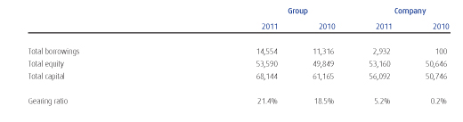
Notes to the Consolidated Financial Statements Contd.
4 SEGMENT REPORTING A segment is a distinguishable component of the Group that is engaged either in providing related products or services (business segment), or in providing products or services within a particular economic environment (geographical segment), which is subject to risks and returns that are different from those of other segments. Segment information is presented in respect of the Group's business and geographical segments. The Group's primary format for segment reporting is based on business segments. The business segments are determined based on the Group's management and internal reporting structure.
Segment results, assets and liabilities include items directly attributable to a segment as well as those that can be allocated on a reasonable basis. Unallocated items comprise mainly income tax receivables & payables, deferred tax liabilities & assets, borrowings, interest receivables & payables.
Segment capital expenditure is the total cost incurred during the period to acquire property, plant and equipment, and intangible assets other than goodwill.
Segment information
(a) Primary reporting format - business segment Management has determined the primary segments based on the nature of products and services and risks and rewards associated.
The Group provides telecommunication services, mainly in Sri Lanka. The Group is organised into four main business segments as follows:
Fixed telephony operations (including CDMA operations)
International Gateway Operations
Mobile telephony operations
Other services
Mainly the connection charges, rental and call charges derived from fixed wired telephony operations and fixed wireless (CDMA) telephony operations are included in Fixed Telephony revenue.
Income derived from use of telecommunication network of the Group for international gateway operations is shown as revenue from international gateway operations.
Mainly the connection charges,rental and call charges derived from mobile telephony operations are included in Mobile telephony revenue.
Other services comprise revenue from IP & Broad band,data services, IPTV and other telephony services which do not constitute reporting segments in isolation.
The segment results for the year ended 31 December 2011 are as follows:
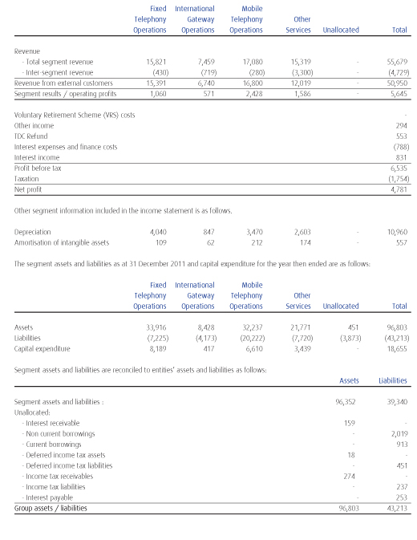
4 SEGMENT INFORMATION (CONTD)
The segment results for the year ended 31 December 2010 are as follows:
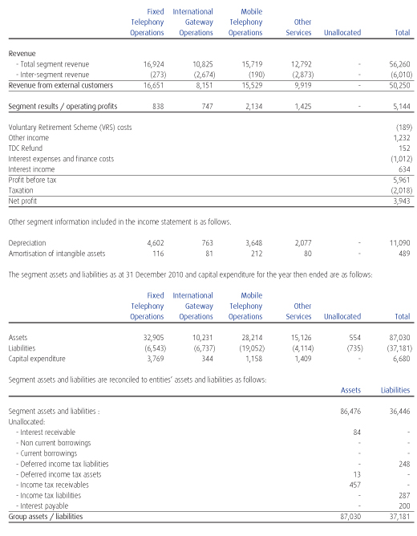
(b) Secondary reporting format - Geographical segment The group's main business segments directly and indirectly operate within one main geographical area, hence it does not qualify for secondary reporting.
5 REVENUE The significant categories under which revenue is recognised are as follows:
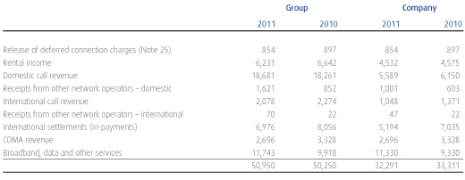
6 OPERATING COSTS The following items have been included in arriving at operating profit before depreciation and amortisation:
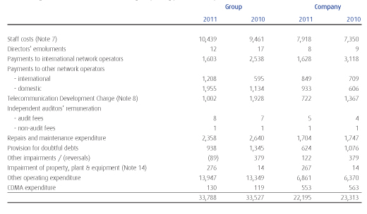
7 STAFF COSTS
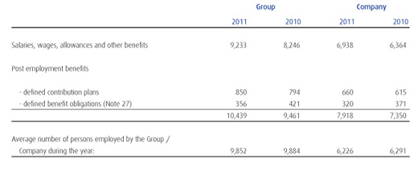
8 REFUNDS ON TELECOMMUNICATION DEVELOPMENT CHARGES (TDC)
In accordance with the Finance Act. No. 11 of 2004, with effect from 03rd March, 2003, all Telecommunication Gateway Operators are required to make a payment defined as the Telecommunication Development Charge (TDC) to the Government of Sri Lanka,based on international call minutes terminated in the country. This also included a disbursement process through which 2/3rd of TDC payment made by the operators would be disbursed to the operators by the Government based on the rural developments made by them.
Through a Gazzette Notification No. 1662/1 issued on 12th July, 2010 a revision of the per minute rate of TDC was declared, while imposing a new rate of USD 0.015 with effect from 15th July, 2010. Along with the review the government also took measures to remove the disbursement process from the TDC payment process which had lasted since 2003.
The total amount of the levy payable by the Group and Company for the period from 1 January 2011 to 31 December 2011 was estimated at Rs 1,002 million (2010-Rs 1,928 million) and Rs 722 million (2010- Rs 1,367 million) respectively and has been recognized as expenses in the current financial year. The corresponding liability, net of payments, has been recognised in the balance sheet.
The claims corresponding to the periods from 01st April, 2007 to 31st March, 2009 which have already been submitted to TRC are still pending. The claims for the period from 01st April, 2009 up to 14th July, 2010 are yet to be submitted to TRC.
9 INTEREST EXPENSE AND FINANCE COSTS
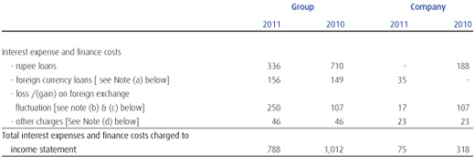
- Interest cost of the company Rs 35 million (2010-Nil ) relates to the USD syndicate loan obtained in 2011. Interest cost of group related to Term loans , syndicate loans and overdraft facilities from local banks.
- Loss/ (gain) on foreign exchange fluctuation of the company mainly include,
- Exchange gain of Rs. 98 million (2010- loss of Rs. 116 million) arising from revaluation of the fixed deposits and bank balances maintained in USD
- Exchange loss of Rs. 30 million on payment to foreign suppliers (2010-gain of Rs. 9 million)
- Exchange loss of Rs. 85 million (2010- Nil) arising from revaluation of USD syndicate loan
- Loss/ (gain) on foreign exchange fluctuation of the group mainly include,
- Exchange gain of Rs. 136 million (2010- loss of Rs. 142 million) arising from revaluation of the fixed deposits and bank balances maintained in USD
- Exchange loss of Rs. 220 million on payment to foreign suppliers (2010-gain of Rs. 185 million)
- Exchange loss of Rs. 147 million (2010- loss of Rs. 117 million) arising from revaluation of USD syndicate loan and other term loans.
- Other charges mainly include interest cost of finance leases.
10 INTEREST INCOME
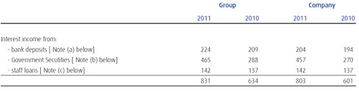
The interest income on bank deposits and Government Securities reflect the prevailing rates on the date of respective investments.
- The weighted average interest rates on bank deposits in LKR and USD were 7.84% (2010 - 9.03%) and 4.64% (2010 - 4.22%) respectively.
- The weighted average interest rates on investments in Government Securities were 7.21% (2010 - 7.99%)
- The weighted average interest rates on staff loans are between 4 % and 7% (2010 - 4% and 7%).
- According to the section 137 of the Inland Revenue Act No 10. of 2006, any person who derives income from the secondary market transactions in government securites is entitled to a notional tax credit in relation to the tax payable by such person. Notional tax credit would be determined by grossing up of the income from the secondary market transactions to an amount equal to 1/9 of same and credit to be afforded for a like sum. Accordingly , company has accounted for Rs. 49 Mn as notional tax credit for the year 2011 . ( 2010 - Rs. 27 million)
11 INCOME TAX EXPENSES The charge for taxation is made up as follows:
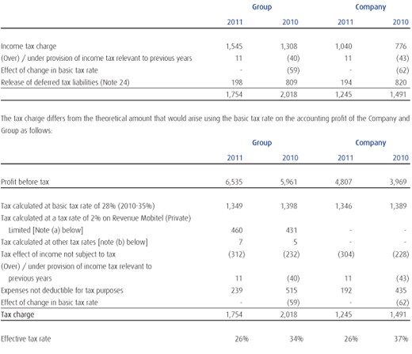
Current income tax charge of the Group / Company is made up as follows:
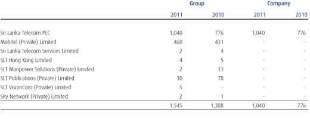
- Pursuant to agreements dated 15 January 1993 and 26 February 2001 entered into with the Board of Investment of Sri Lanka under Section 17 of the Board of Investment Act No. 4 of 1978, 15 years tax exemption period granted to Mobitel (Private) Limited expired on 30 June 2009 and as per the agreement, Mobitel (Private) Limited opted for the turnover based tax option in which 2% was charged on the turnover for a further period of 15 years commencing from 1 July 2009.
- As per the amendment to Inland Revenue Act no 22 of 2011, for the year of assessement 2011/2012, SLT Vision com (Private) Limited,Sri Lanka Telecom (Services) Limited and SLT Manpower Solutions( Pvt) Limited are liable for income taxes at the rate of 10 % on their taxable income. SLT (Hong Kong) Limited is liable for income tax rate of 16.5%.
- As per the agreement with the Board of Investement of Sri Lanka (BOI) dated 19 November 2009 under Section 17 of BOI Act No.4 of 1978 the Sky Network (Private) Ltd is exempt from income tax for a period of 6 years.For the above purpose the year of assessment shall be reckoned from the year in which the company commences to make profits or any year of assessment not later than two years reckoned from the date of on which the Company commences commercial operation.whichever is earlier as may be specified in a certificate issued by the Board.
In view of the above the Company is not liable to income tax on business profit. The Current tax wholly consists of tax on interest income.
12 EARNINGS PER SHARE The basic earnings per share is calculated by dividing the net profit attributable to equity holders by the weighted average number of ordinary shares in issue during the year.
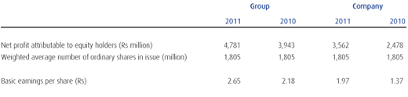
13 DIVIDENDS
In respect of 2010, a first and final dividend of Rs 0.60 (2009 - Rs 0.25) per share amounting to a Rs 1,082,916,000 (2009 - Rs 451,215,000) was paid during the current year.
The Board has recommended a first and final dividend of Rs 0.85 per share amounting to Rs 1,534,131,000 for the year ended 31 December 2011. This is to be approved by the shareholders at the Annual General Meeting to be held on 29 March 2012. As stipulated by Sri Lanka Accounting Standard No. 12 (Revised) - Events After The Balance Sheet Date, the proposed dividend is not recognised as a liability as at 31 December 2011.
14 PROPERTY, PLANT AND EQUIPMENT
Group
 14 PROPERTY, PLANT AND EQUIPMENT CONTD.
14 PROPERTY, PLANT AND EQUIPMENT CONTD.
Company
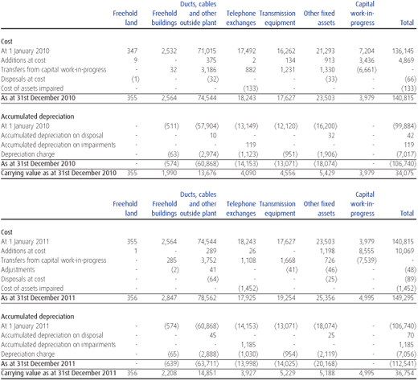
- On 1 September 1991, the Department of Telecommunications (DoT) transferred its entire telecommunications business and related assets and liabilities to SLT. A valuation of the assets and liabilities transferred to SLT was performed by the Government of Sri Lanka. The net amount of those assets and liabilities represents SLT’s Contributed Capital on incorporation, and the value of property, plant and equipment as determined by the Government of Sri Lanka valuers was used as the opening cost of fixed assets on 1 September 1991 in the first statutory accounts of SLT. Further, SLT was converted into a public limited company,
Sri Lanka Telecom Limited (SLTL), on 25 September 1996 and on that date, all of the business and the related assets and liabilities of SLT were transferred to SLTL as part of the privatisation process.
- The cost of fully depreciated assets still in use in the company as at 31 December 2011 was Rs 70,521 million (2010 - Rs 64,136 million).
- No assets have been mortgaged or pledged as security for borrowings of the Company. However, Mobitel (Private) Limited, a subsidiary of the Company, has pledged its assets at a value of Rs 9.7. billion as at 31 December 2011 (2010-9.7 billion) for its bank borrowings [Note 23 (k)].
- The Directors believe that the Company has freehold title to the land and buildings transferred on incorporation (conversion of SLT into a public limited company on 25 September 1996), although the vesting orders specifying all the demarcations and extents of such land and buildings could not be traced. The Company has initiated action to transfer legal title documentations.
- The property, plant and equipment is not insured except for third party motor vehicle insurance. An insurance reserve has been created together with a sinking fund investment to meet any potential losses with regard to uninsured property, plant and equipment. At the balance sheet date, the insurance reserve amounted to Rs 387 million (2010 - Rs 344 million) (Note 28).
- Impairment of assets mainly consist of the carrying value of switches Rs 267 million that were impaired as a result of implementation of Next Generation Network (NGN) phase 3b ( 2010 - Rs. 14 million ).
- Additions include assets costing Rs 57 million (2010 - Rs 48 million) obtained under finance leases (where the Company is the lessee) and the additions of the Group includes assets costing Rs 82 million obtained under finance leases (2010 - Rs 48 million) where the Group is the lessee.
- The property, plant and equipment includes motor vehicles acquired under finance leases, the net book value of which is made up as follows:
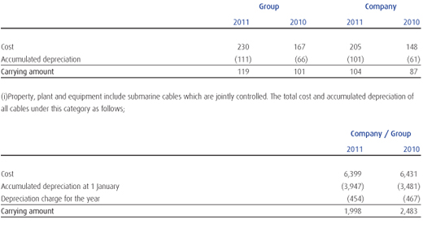
15 INTANGIBLE ASSETS
Group
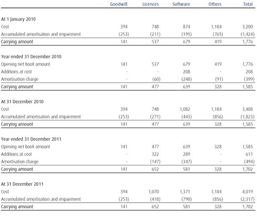
15 INTANGIBLE ASSETS CONTD.
Company
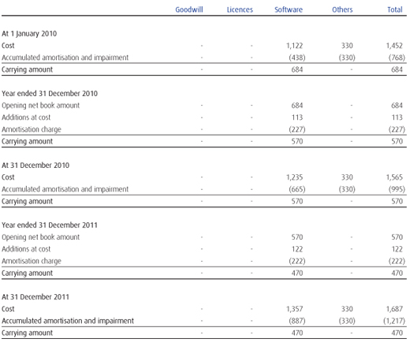
Goodwill of the Group
The goodwill in Group consists of goodwill arising on acquisition of Mobitel (Private) Limited.
Impairment tests for goodwill
Goodwill is allocated to the Group's Cash-Generating Units (CGUs). A summary of the goodwill allocation is presented below:
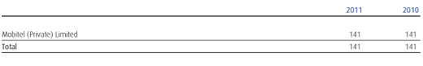
15 INTANGIBLE ASSETS CONTD. The recoverable amount of a CGU is determined based on value-in-use calculations. These calculations use pre - tax cash flow projections based on financial budgets approved by management covering a five-year period. Cash flows beyond the five-year period are extrapolated using the estimated growth rates stated below. The growth rate does not exceed the long-term average growth rate for the business in which the CGU operates.
The key assumptions used for value-in-use calculations are as follows:
Growth rate 14%
Discount rate 12%
Management determined budgeted gross margin based on past performance and its expectations of market development. The weighted average growth rates used are consistent with the forecasts included in industry reports. The discount rates used are pre-tax and reflect specific risks relating to the relevant operating segments. No impairment charge has been recognised for the year ended 31 December 2011 for the above CGU (2010 - Rs Nil).
15.a Financial prepayments
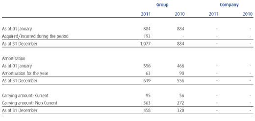
Financial prepayments include financial charges for the guarantee issued by The Swedish Export Credit Guarantee Board (EKN) for SCB loan, insurance premium for the guarantee issued by China Export and Credit Insurance Corporation for HSBC loan and other financial prepayments, for Mobitel (Private) Limited.
16 INVESTMENTS IN SUBSIDIARIES
Details of the subsidiary companies in which the Company had control as at 31 December are set out below:
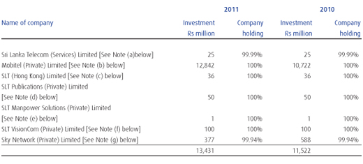
The directors believe that the fair value of each of the companies listed above do not differ significantly from their book values.
- This investment in subsidiary company consists of 2,500,000 shares representing 99.99 % of stated capital of Sri Lanka Telecom (Services) Limited.
- The Company owns 1,206,213,240 shares representing 100% of the entire Ordinary Share capital of Mobitel (Private) Limited, at 31 December 2011.
During the year 175,000,000 12% and 200,000,000 14% cumulative and redeemable preference shares with a value of Rs 10 per share have been covertered to Ordinary shares of Mobitel (Private) Limited.
Additions during the year, comprise the capital infusion of Rs 2,120 million in ordinary shares with a value of Rs 10 per share of Mobitel (Private) Limited.
At 31 December 2011,preference dividends amounting to Rs 1,403 million were in arrears (2010 Rs 1,128 million). No accrual has been made in the Company's financial statements as the Board of Directors has decided to waive off the right to receive the same.
- This investment in subsidiary company consists of 2,500,000 shares representing the entire stated capital of SLT (Hong Kong) Limited incorporated in Hong Kong.
- This investment in subsidiary company consists of 5,000,000 shares representing the entire stated capital of SLT Publications (Private) Limited.
- This investment in subsidiary company consists of 50,000 shares representing the entire stated capital of SLT Manpower Solutions (Private) Limited.
- This investment in subsidiary company consists of 10,000,000 shares representing the entire stated capital of SLT VisionCom (Private) Limited.
- This investment in subsidiary company consists of 42,071,251 shares representing a 99.94% holding of the issued stated capital and 6,000,000 12% cumulative and redeemable preference shares of Sky Network (Private) Limited.
At 31 December 2011, preference dividends amounting to Rs 24 million (2010 - Rs 16 million) has not been recognised in the financial statements.
All the subsidiaries except for Mobitel (Private) Limited and SLT (Hong Kong) Limited are audited by KPMG Ford, Rhodes,Thornton & Company.
17 LONG TERM INVESTMENTS
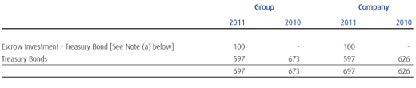
Long Term investments are investments with a maturity period beyond 1 year in Government Treasury Bonds representing the face value and the premium/discount .
- The amount represents the balance of the Escrow investment maintained as the insurance reserve.
18 NON-CURRENT RECEIVABLES
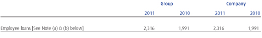
- Employee loans are repayable in equal monthly installments over the loan period not exceeding eight years. The amount shown as a non-current receivables represent staff loan installments falling due after 1 January 2013.
- No loans given to Directors of the company
19 INVENTORIES
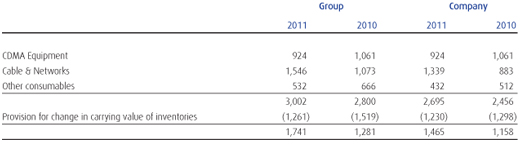
- Inventories consist of trading and capital inventory of which include telecommunication hardware, CDMA handsets, consumables and office stationery. Inventory is stated net of provisions for slow-moving and obsolete items.
20 TRADE AND OTHER RECEIVABLES
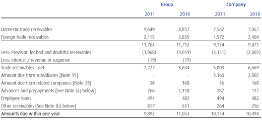
- Advances and prepayments of the Company mainly consist of advances on Building rent of Rs 16 million (2010 - Rs 8 million), payments for software maintenance of Rs 136 million (2010 - Rs 72 million) and Purchase advance of Rs 11 million ( 2010-Rs 2 million.) Advances and prepayments of the Group mainly consist of advances on Building rent of Rs 134 million (2010 - Rs 114 million) and payments for software maintenance of Rs 368 million (2010 - Rs 72 million) and prepayment for advertising hoarding Rs 70 million (2010 - Rs 312 million) and current portion of financial prepayment Rs 95 million (2010- Rs 56 million)
- Other receivables of the Company consist of interest receivable of Rs 159 million (2010 - Rs 116 million), refundable deposits of Rs 98 million (2010 - Rs 85 million) and dishonoured cheques of Rs 2 million (2010 - Rs 3 million). Other receivables of the Group mainly consist of interest receivable of Rs 159 million (2010 - Rs 117 million), refundable deposits of Rs 176 million (2010- Rs 162 million) VAT receivable of Rs 52 million (2010 - Rs 181 million), receivables from sales agents Rs 97 million (2010-Rs 101 million ) site rentals receivables from other operators Rs 287 million (2010-Rs 226 million)
21 SHORT TERM INVESTMENTS
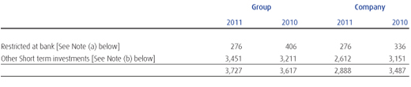
Short term investments are investments with a maturity period of three to twelve months.
- The restricted at bank represents the balance of the Escrow deposit maintained as the insurance reserve.
- Other Short term deposits represent bank deposits and investments in Government Securities
22 CASH AND CASH EQUIVALENTS
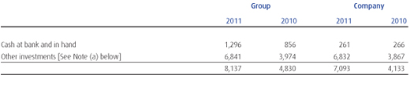
- Other investments represent USD fixed deposits equivalent to Rs 1,356 million (2010- 784 million), investments in Government Securities amounting to Rs 1,222 million (2010- Rs 3,083 million) and LKR Fixed deposit amounting to Rs 4,253 million (2010-Nil) maturing within a period of three months.
- For the purpose of the cash flow statement, the year-end cash and cash equivalents comprise the following:
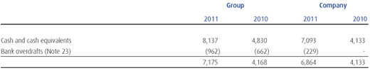
23 BORROWINGS
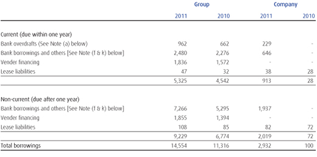
- Although bank overdrafts are reflected in the company, no bank accounts are overdrawn in real terms.
- The interest rate exposure of the borrowings of the Group and Company was as follows:
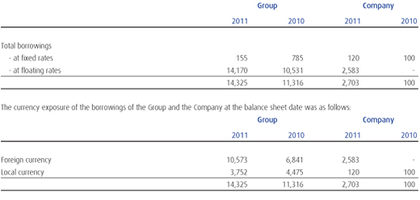
Borrowings (bank overdraft) of Rs. 229 million reflected in the Company and Group was not included in either interest rate exposure nor in currency exposure since same is not interest liable as bank accounts are not overdrawn in real terms.
- Effective interest rates of the Company and the Group are as follows:
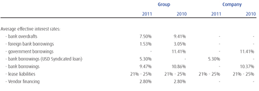
- Maturity analysis of the Company and the Group is as follows:
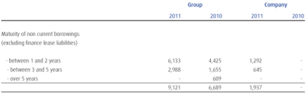
- Analysis of the finance lease liabilities of the Company and the Group is as follows:
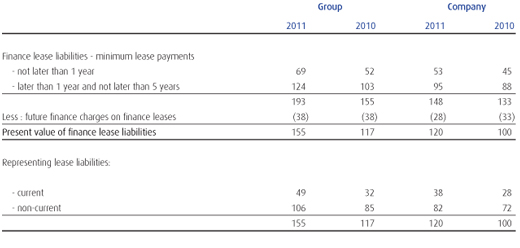
23 BORROWINGS (CONTD)
- During the year company drew down the 1st tranche of USD syndicated loan USD 22.5 million (equivelent to Rs 2,498 million) in September 2011 out of the total loan amount of USD 75 Million.
- The loan covenants include submission of audited financial statements to the lenders within specified periods from the financial year end, and to maintain adequate accounting records in accordance with generally accepted accounting principles.
- The Directors believe that the Company and the Group will have sufficient funds available to meet its present loan commitments.
- Lease liabilities of the Company and the Group are effectively secured by the lessor against the rights to the title of the asset.
- Bank borrowings and bank overdrafts of Mobitel (Private) Limited, a subsidiary of the group, are secured, inter alia, by corporate guarantees given by the Company.
- Bank borrowings of Mobitel (Private) Limited are secured by a pledge over its property, plant and equipment at a value of
Rs 9.7 billion [See Note 14 (c)]
- Mobitel (Private ) Limited has borrowed Rs 3,394 million during the year for the purpose of Capital Expansion Projects.
24 DEFERRED INCOME TAX (ASSETS) / LIABILITIES
Recognized deferred income tax (assets) / liabilities Deferred income tax liabilities are calculated on all taxable and deductible temporary differences arising from differences between accounting base and tax base of assets and liabilities. Deferred income tax is provided under the liability method using a principal tax rate of 28% (year of assessment 2010 / 2011 - 28%).
The movement in the deferred income tax account is as follows:
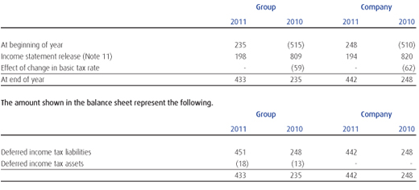
The taxable and deductible temporary differences mainly arise from property, plant and equipment, deferred income, provision for defined benefit obligations and other provisions.
The movement in deferred income tax assets and liabilities during the year, without taking into consideration the off-setting of balances within the same tax jurisdiction, is as follows:
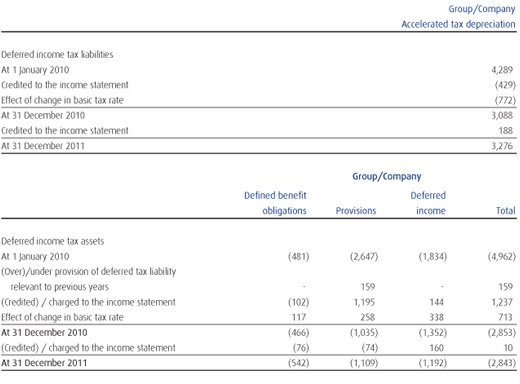
Unrecognized deferred income tax (assets) / liabilities
Deferred income tax assets are recognised for tax losses carry-forwards to the extent that the realisation of the related tax benefit through future taxable profits is probable. The Group did not recognise deferred income tax assets of Rs 28 million (2010 - Rs 64 million) in respect of tax losses of subsidiaries amounting to Rs 259 million (2010 - 285 million) that can be carried forward against future taxable income.
The adjusted tax lossess available for carry forward as at 31 December are as follows :-
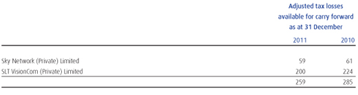
No deferred tax is recognised in Mobitel (Private) Limited, a subsidiary of the Group, as it pays income tax based on turnover
[Note 11 (a)].
25 DEFERRED INCOME
Deferred connection charges of the Company represents the connection charges relating to PSTN network, net of amounts amortised to the income statement. The connection charges are deferred over a period of 15 years as stated in Accounting Policy p(v). The deferred IRU sales of the Company includes the revenue arising on sale of SEA-ME-WE 4 cable capacity which is recognised over the lease period of 15 years. Release of Backhauling charges represent the revenue arising from lease of SEA-ME-WE 3 cable capacity. Deferred Pre-paid card revenue in company represents unused CDMA and SLT Passport cards. In addition, the deferred income of the Group mainly represents unused pre-paid card revenue and refund of Telecommunication Development Charges (TDC) received in 2009 from Telecommunication Regulatory Commission in connection with the cost of network rollout by Mobitel (Private) Ltd.
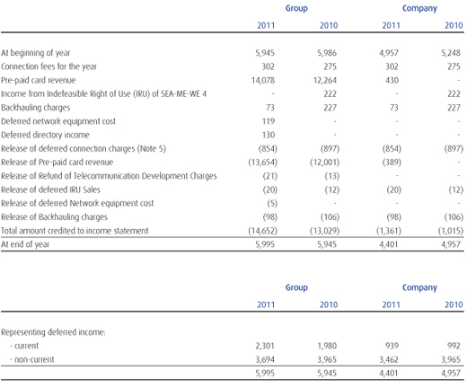
26 TRADE AND OTHER PAYABLES
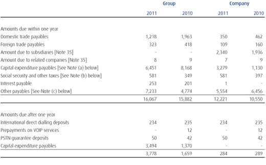
- Capital expenditure payables of the Company mainly consist of contractors’ payable & retention of Rs 2,747 million (2010 - Rs 748 million) and advances on network restoration after road works of Rs 531 million (2010- Rs 382 million). Capital expenditure payables of the Group mainly consist of contractors’ payable of Rs 5,933 million (2010 - Rs 7,786 million) and advances on network restoration after road works of Rs 531 million (2010 - Rs 382 million).
- Social security and other taxes of the Company mainly consist of and Telecommunication Levy (TL) of Rs 356 million
(2010 - Rs Nil)., Cess Rs 66 million ( 2010-Rs Nil ), IDD Levy of Rs 27 million (2010-Rs Nil ), EPF payable of Rs 76 million (2010 - Rs 71 million). Social security and other taxes of the Group mainly consist of Telecommunication Levy (TL) of Rs 649 million (2010- Rs. Nil ), Cess of Rs 114 million (2010 - Rs. Nil). IDD Levy payable of Rs 46 million (2010-Rs Nil)
- Other payables of the Company mainly consist of dividend payable to the Government of Sri Lanka of Rs 249 million (2010 - Rs 249 million), provision for Goods Received Notes (GRNs) of Rs 963 million (2010 - Rs 462 million), International Telecommunication Operators’ Levy payable of Rs 3,125 million (2010 - Rs 4,508 million) and accrued expenses and other payables of Rs 809 million (2010 - Rs 686 million). Other payables of the Group mainly consist of dividend payable to the Government of Sri Lanka of Rs 249 million (2010 - Rs 249 million), provision for Goods Received Notes (GRNs) of Rs 963 million (2010 - Rs 462 million), International Telecommunication Operators’ Levy payable (without netting off TDC refunds)of Rs 3,150 million (2010 - Rs 4,660 million), and accrued expenses and other payables of Rs 1,931 million (2010 - Rs 1,415 million).
27 EMPLOYEE BENEFITS
- Movement in present value of employee benefit liabilities
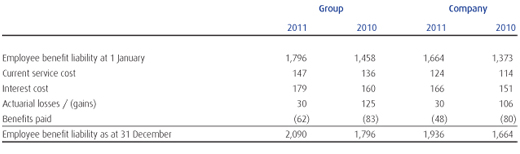
- The expenses recognised in the income statement
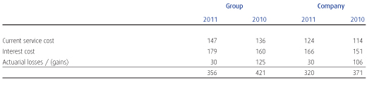
The expenses are recognised under staff cost in income statements
- As stated in Accounting Policy 3. n (2) at 31 December 2011, an actuarial valuation was carried out by an independent actuary.
The principal actuarial assumptions used were as follows:
In addition to above, demographic assumptions such as mortality, withdrawal, retirement age were considered for the actuarial valuation. In 2011, 1967/70 Mortality Table issued by the Institute of Actuaries London (2010 - 1967/70 Mortality Table) was taken as the base for the valuation.
The provisions for defined obligations of Sri Lanka Telecom PLC, SLT Manpower Solutions (Private) Ltd and Mobitel (Private) Limited are actuarially valued by Messrs Actuarial and Management Consultants (Private) Limited and Piyal S Goonetilake respectively. The employee benefit liability of all other comapnies in the group are based on gratuity formula in Appendix E of SLAS 16.
The provision for defined benefit obligations is not funded.
28 INSURANCE RESERVE
As stated in Accounting Policy 3.v the Company transfers annually from the retained earnings an amount equal to 0.1% of additions to property, plant and equipment to an insurance reserve. An equal amount is invested in a sinking fund to meet any funding requirements for potential losses from uninsured property, plant and equipment.
Management regularly monitors the charges made against the insurance reserve and the adequacy of the provision made.
29 GRANT
- Grant in Company and group consist of exchange equipment received from Alcatel CIT France in 2005.
30 STATED CAPITAL
The issued and fully paid share capital is made up as follows:
31 CASH GENERATED FROM OPERATIONS Reconciliation of profit before tax to cash generated from operations:
32 CAPITAL COMMITMENTS
The Group and the Company have purchase commitments in the ordinary course of business as at 31 December 2011 as follows:
Operating Lease commitments
The future minimum lease payments under operating leases are as follows:
33 CONTINGENCIES
- Global Electroteks Limited has initiated legal action under High Court Case No. 20/2006 claiming damages of USD 12 million from SLT PLC for unlawful disconnection of interconnection services. The Trial is proceeding.
- Directories Lanka (Private) Limited (DLPL) filed case No. 2/2006 (3) in Commercial High Court against SLT PLC claiming Rs 250 million, damages for purported unfair competition with regard to Artwork on the cover page of SLT Directory Publication.
Order delivered on 23 April .2010 dismissing the claim lodged by Directories Lanka (Private )Limited and DLPL had appealed against the order Appeal is pending.
- IPTV Case - Just In Time Holdings (Pvt.) Ltd (JIT) is claming USD 4,738,846.57, as payments due to them from SLT under the contract. SLT has lodged a counterclaim of Rs. 437,970,137.00 Under its statements of Defense. Proceedings are concluded and order is due.
- Rates & Taxes -DSP/00111/08 , Application against the unreasonable increase of Assessment Tax of SLT Headquarters, to Rs. 8,452,500.00 per Quarter from the year 2006. Legal action filed by SLT against Colombo Municipal Council, against the arbitrary increase of assessment value of head quarters premises from 84 million to 96 million. The quarterly assessment tax increase from 2006 was Rs 7,350,000.00 to Rs 8,452,500.00. The case is proceeding.
- WP/HCCA/COL/106/LA -Appeal made by Colombo Municipal Council against the stay order granted in favor of SLT precluding CMC levying the aforementioned Assessment taxes from SLT is pending in Court..
- Case no. 4055/M in District Court Gampaha is filed for failure to reconnect the respective telephone facility. The trial is proceeding. Based on the opinion received from lawyers, it is of the view that estimation of outflow is not applicable.
- A license fee amounting to Rs. 300 Mn, payable to TRC by Sky Networks(Private) Limited which has not been recognised , pending final negotiation with the TRC regarding license conditions.
- Case no. 506/2011/MR filed by H/S Communication Limited against SLT PLC and SLT VisionCom (Private) Limited seeking stay order against airing of certain channels by SLT PLC amounting to Rs. 60 million.
The Company has provided guarantees on behalf of its Subsidiaries for following credit and trade finance facilities.
- Facilities amounting to Rs 6,730 million (2010 - Rs 6,730 million) and USD 132.9 million (2010 - USD 86.53 million) for Mobitel (Private) Limited for the GSM rollout stage 2, 3, 4, 5 and 6.
- Facilities amounting to Rs 26 million (2010-Rs16 million) for Sri Lanka Telecom Services Limited to obtain facilities for working Capital requirement.
- Facilities amounting to Rs 112.8 million (2010- Rs 112.8 million) for Sky Network (Pvt ) Limited to facilitate WIMAX turnkey solution project.
With regard to cases detailed above, pending the outcome of the appeals and hearings, no provisions have been recognised in the financial statements up to 31 December 2011.
In addition to the above referred cases, there are more issues in relation to claims by employees and third parties for damages. In the opinion of the Directors none of these actions are likely to result in a material liability to the Company and its subsidiaries.
34 COMPARATIVES The presentation and classiication of following items in these financial statements are amended to ensure comparability with the current year.
- Telecommunication Development Charges(TDC) of Rs.43 million received in previous years by Mobitel (Private) Ltd.,which was Included in Grant in the previous year was recognized under deferred income in this year for a better Presentation of the Financial Statements.
- Non-current portion of vender financing of Mobitel (Private) Ltd Rs.1,394 Million included in Trade & Other payables in previous year was recognized under borrowing (non- current) in this year for a better Presentation of the financial statements.
- Current portion of the above vendor financing of Mobitel (Private) Ltd Rs.1,572 Million included in trade & Other payables in previous year was recognized under borrowings (current) in this year for a better presentation of the financial statements.
35 RELATED PARTY TRANSACTIONS
35.1 The Company had following transactions with its subsidiaries during the year under review:
(a) Mobitel (Private) Limited
The Company has provided guarantees on behalf of Mobitel for following loans and obligations.
Facilities amounting to Rs 6,730 million (2010 - Rs 6,730 million) and USD 132.9 million (2010 - USD 86.53 million) for Mobitel (Private) Limited for the GSM rollout stage 2, 3, 4, 5 and 6.
The Company has provided guarantees on behalf of Sri Lanka Telecom (Services) Limited for following loans and obligations.
Facilities amounting to Rs 26 million (2010-Rs16 million) for Sri Lanka Telecom (Services) Limited to obtain facilities for working Capital requirements.
The Company has provided guarantees on behalf of Sky Network (Private ) Limited for following loans and obligations.
Facilities amounting to Rs 112.8 million (2010- Rs 112.8 million) for Sky Network (Pvt ) Limited to facilitate WIMAX turnkey solution project.
35 RELATED PARTY TRANSACTIONS CONTD.
35.1 The Company had following transactions with its subsidiaries during the year under review:
(h) Fees for secondment of personnel and services provided to / by SLT PLC
35.2 Related party relationships
SLT Group Directors and their directorships in other companies where transactions were carried out with SLT and disclosed in Note 35.1 and 35.3.
35.3 Transactions with other related parties
35 RELATED PARTY TRANSACTIONS CONTD.
35.3 Transactions with other related parties
35.4 Transactions with key management personnel Key Management Personnel comprise the directors and Chief Officers of the Company and the Group.
Parties are considered to be related if one party has the ability to control the other party or exercise significant influence over the other party in making financial and operating decisions. A related party transaction takes place with a transfer of resources or obligations between related parties, regardless of whether a price is charged.
35 RELATED PARTY TRANSACTIONS CONTD.
35.4 Transactions with key management personnel All transactions during the year and balances as at the balance sheet date between the following companies have been eliminated in preparing the consolidated financial statements.
Mobitel (Private) Limited
Sri Lanka Telecom (Services) Limited
SLT (Hong Kong) Limited
SLT Publications (Private) Limited
SLT Manpower Solutions (Private) Limited
SLT VisionCom (Private) Limited
Sky Network (Private) Limited
Related party transactions disclosed above should be read in conjunction with Notes 16 and 35 to the financial statements.
36 GROUP REPORTING DATES The annual financial statements of the subsidiaries, Sri Lanka Telecom (Services) Limited, SLT (Hong Kong) Limited, SLT Publications (Private) Limited, Mobitel (Private) Limited, SLT Manpower Solutions (Private) Limited, SLT VisionCom (Private) Limited and Sky Network (Private) Limited are prepared at 31 December each year.
37 POST BALANCE SHEET EVENTS No events have arisen since the balance sheet date which would require adjustments to, or disclosure in, these consolidated financial statements, except following;
Depreciation of Sri Lankan Rupee against United States Dollar
Sri Lankan rupee which is the presentation currency for these Financial Statements materially depreciated against United States Dollar after the Balance Sheet date. Due to the above, unrealised loss on foreign exchange fluctuation for the Group is Rs. 726 million, as at 17 February 2012.
Ten Year Progress -Group
Value Added Statement
Portfolio of Lands
Valuation of lands transferred on incorporation (conversion of SLT into a public limited company in 1996) and lands acquired after the incorporation, are based on valuation reports submitted by a firm of incorporated valuers. These lands and respective values are as follows:
 Notice of Annual General Meeting
Notice of Annual General Meeting
NOTICE IS HEREBY GIVEN that the FIFTEENTH ANNUAL GENERAL MEETING of Sri Lanka Telecom PLC will be held in 29th March 2012 at 10.00 am at the Kings' Court, Cinnamon Lakeside Colombo, No.115, Sir Chittampalam A Gardiner Mawatha, Colombo 2 for the purpose of conducting the following ordinary business:
AGENDA
1 To receive and consider the Annual Report of the Board of Directors on the affairs of the Company and Statement of Accounts for the year ended 31 December 2011 with the Report of the Auditors thereon.
2 To declare a first and final dividend of Eighty Five Cents (85 Cents) per share as recommended by the Directors.
3 To re-elect as a Director, Mr. Chan Chee Beng, who retires by rotation in terms of Articles 91 and 92 of the Articles of Association.
4 To re-elect as a Director, Mr. Jeffrey Jay Blatt, who retires by rotation in terms of Articles 91 and 92 of the Articles of Association.
5 To re-elect as a Director, Mr. Jayantha Dharmadasa, who retires by rotation in terms of Article 91 and 92 of the Articles of Association
6 To re-appoint Messrs, KPMG Ford Rhodes, Thornton & Co., Chartered Accountants as Auditors for the ensuing year and to authorize the Directors to determine their remuneration:
7 To authorise the Directors to determine and make donations to charities.
8 To transact any other business of which due notice has been given.
BY ORDER OF THE BOARD
SRI LANKA TELECOM PLC
P W Corporate Secretarial (Pvt) Ltd
SECRETARIES
Colombo, Sri Lanka
17th February 2012
Notes
1. A member entitled to attend and vote at the meeting is entitled to appoint a proxy to attend and vote instead of him/her.
2. A proxy need not be a member of the Company.
3. A Form of Proxy accompanies this Notice.
Abbreviations
4G
Fourth Generation
ACC
Association of Cable Communicators
ADSL
Asymmetric Digital Subscriber Line
ASPI
All Share Price Index
BSNL
Bharat Sanchar Nigam Limited
CDMA
Code Division Multiple Access
CLI
Caller Line Identification
DEL
Direct Exchange Line
E1
E – Carrier System level 1
EBITDA
Earnings Before Interest, Taxes, Depreciation and Amortisation
EIG
Europe - India Gatewa y
EFTNS
External Fixed Telecommunications NetworkServices
EPF
Employee Provident Fund
ETF
Employee Trust Fund
FCR
Fault Clearance Rate
FTTN
Fiber-To-The-Node
Gbps
Gigabits per second
GDP
Gross Domestic Product
GTH
Global Telecommunications Holdings
HDTV
High Definition Television
ICASL
Institute of Chartered Accountants of Sri Lanka
ICT
Information and Communication Technologies
ICTA
Information and Communication Technology Agency of Sri Lanka
IDD
International Direct Dialling
|
IGW
International Gateway
IMEWE
India - Middle East - Western Europe
IMS
IP Multimedia Subsystem
IMT-2000
International Mobile Telecommunications-2000
IP
Internet Protocol
IP-VPN
Internet Protocol Virtual Private Network
IPTV
Internet Protocol Television
ITW
International Telecoms Week
KPI
Key Performance Indicator
LEARN
Lanka Education And Research Network
LTE
Long Term Evolution
Mbps
Megabits per second
MEN
Metro Ethernet Network
MPEG
Moving Picture Experts Group
MPLS
Multiprotocol Label Switching
MSAN
Multi-Service Access Node
NBN
National Backbone Network
NGN
Next Generation Network
NTT
Nippon Telegraph and Telephone Communications
OIC
Officer in Charge
OSS
Operational Support System
Peo TV
Personalised Entertainment Option Television
PNETS
Public Non Exclusive Telecommunication Services
PoP
Point of Presence
|
PSTN
Public Switched Telephone Network
PTC
Pacific Telecommunications Council
RWT
Right When Tested
SAFA
South Asian Federation of Accountants
SBN
SLT Backbone Network
SDH
Synchronous Digital Hierarchy
SDM
Space Division Multiplex
SEA ME WE
South East Asia-Middle East-West Europe
SKA
Sender Keeps All
SLIM
Sri Lanka Institute of Marketing
SMS
Short Message Service
STM-1
Synchronous Transport Module level-1
TRCSL
Telecommunication Regulatory Commission of Sri Lanka
VoD
Video on Demand
VoIP
Voice over Internet Protocol
VPN
Virtual Private Network
WAP
Wireless Access Protocol
WiMAX
Worldwide Interoperability for Microwave Access |